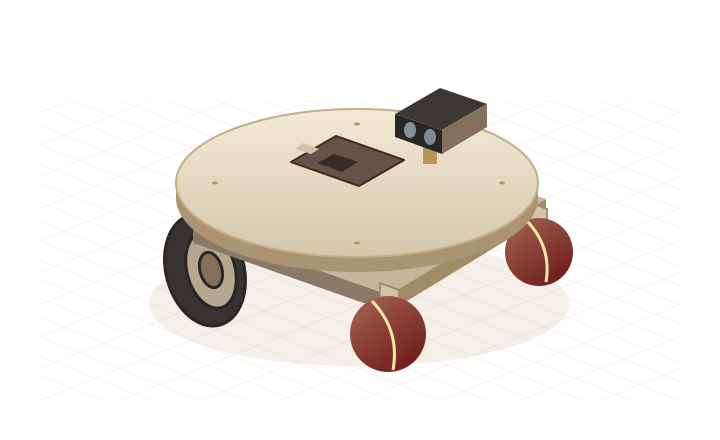

Caster mobility,
beyond flat ground.

Interactive model requires JavaScript and WebGL. Use the component buttons below to explore the setup.
Two split spherical supports on the front rocker rails.
Small contact.
A different way to move.
How much can a passive support change a robot’s motion? We study ball casters and wheelchair casters on the same mobile platform.
Beyond smooth floors
Explore how a rolling spherical support negotiates uneven ground.
Resilience to disturbance
Compare resistance to redirection and recovery after a lateral push.
More faithful trajectories
Measure how caster motion affects path error and heading stability.
From a wheel turn to a waypoint.
Encoders, inertial sensing, and depth perception connect the mechanics to an onboard navigation and control loop.
Swipe to explore the diagram →
Control is layered: the Pi computes trajectory and heading corrections; the car ESP closes the fast wheel-speed PID loop. Visual localization corrects the global reference.
Wheel & turret encoders
The car ESP counts rotation and sends timestamped telemetry over UART.
One inertial reference
The same ESP reads the BNO055. A D455 depth camera connects directly to the Pi.
Interchangeable casters
Split ball casters and conventional swivel casters share the simulation platform.
Observe passive motion
H1, H2, and CENTER encoders record the ball assembly; vision provides another estimate.
Follow the signal.
A platform for comparison.
Paper details, author links, and final datasets can be added here.
- Paper
- Title to be added
- Authors
- Author names · Institution
- Venue
- Publication details to be added
- Resources
- Paper · Code · Dataset — links forthcoming